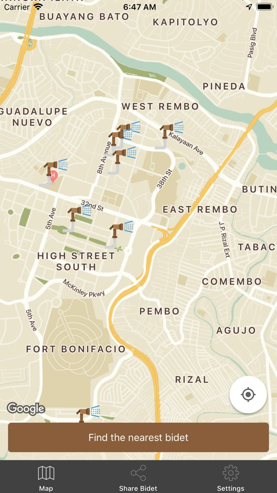

San Bidet
Find clean restrooms with bidets around the Philippines.
Finding a clean restroom with a bidet can be harder than it should be, especially while traveling. I built San Bidet to solve that for myself first, then put it out for anyone else running into the same problem.
- Ownership
- Founder, designer, and mobile developer
- Platforms
- iOS / Android
- Outcome
- 4.7 rating, 425 App Store ratings, local media coverage